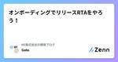

NE株式会社の開発ブログのフィード
https://zenn.dev/p/neinc_tech
NE株式会社のエンジニアを中心に更新していくPublicationです。 NEでは、「コマースに熱狂を。」をパーパスに掲げ、ECやその周辺領域の事業に取り組んでいます。 Homepage: https://ne-inc.jp/
フィード

オンボーディングでリリースRTAをやろう！
NE株式会社の開発ブログのフィード
はじめにはじめまして、NE株式会社の後藤です！2024/05/01に中途で入社しました。7日で初リリースできたことを振り返ります。組織やチームに慣れていない人が働きはじめの振り返りをすることは、良いところや改善点を洗い出すための観点となると思います。早くやることはチームの共通意識が高まったり、早く成功体験を得られるというメリットがあります。チームに誰か入るよって人、参加するよっていう人の参考になればと思います。 RTAを通してわかること振り返ると次のような問が、オンボーディング時の観点になるなと思いました。オンボーディングリリースRTAを通して、これらに答えるとき...
7日前

GitHub Actionsでcron式が書けるみたいですよ
NE株式会社の開発ブログのフィード
はじめにNE株式会社の山本です！GitHub Actionsでcron式が書けます。結論これだけですｗ「そんなの知ってるよ！」って方は弊社の活用事例を見ていってください。まわりの後輩に聞いてみると意外と知らない方もいたので、この記事をキッカケに覚えて使ってみてください！ よくやるGitHub Actionsのトリガープルリクエストができあがった時をトリガーとするもの（ユニットテストとか）on: pull_requestmainにpushされた時をトリガーとするもの（デプロイとか）on: push: branches: - main...
25日前
開発部内でDogfooding やってみました
NE株式会社の開発ブログのフィード
Dogfooding やってみましたこんにちは！私はNEで複数拠点周りの機能を開発するチームに属しており、ここ最近は拠点周りの新機能開発を行っています。「使いやすいプロダクトを作りたい」「使い心地のいいUIを実現したい」新機能開発のとき、開発者はこんな想いを胸に抱くと思います。実際にユーザーにインタビューしたりして使いやすいものになっているか確認したいところですが、コストがかかり頻繁にはできないですよね。Dogfoodingでは開発中の製品・機能を社内リソースでテストすることで、開発物のFBを得て改善を目指すものです[1]。今回、開発部の他チームと合同でDogfoodi...
1ヶ月前
AWS Aurora で I/O-Optimized を使ったらコストが半額になった
NE株式会社の開発ブログのフィード
背景NE株式会社の SRE チームでは業務の1つにコストの監視があります。日々インフラの変更が行われていく中で想定通りのコスト変動が起きているかどうかを確認する作業は予算にも関わる業務であり、重要であると考えています。その中で、弊社が提供するサービスは以前から Aurora のコストがその大半を占めていることが分かっていました。10年以上続くサービスではありますが、いわゆるレガシーコードはやはり存在しており、それは Aurora への読み書きのコストにも影響している側面があります。継続的な改善をしている背景はありつつも、既存の重要なロジックに関わる処理のリファクタや SQL ...
2ヶ月前
QuickSightは良いぞ
NE株式会社の開発ブログのフィード
我々のチームでは、BIツールにAWSのQuickSightを使っています。売上などのデータを可視化して分析したいというニーズがビジネスサイド[1]にあり、かつ弊社ではほとんどのサービスをAWSで運用しているため、QuickSightを選択しました。しばらく運用してきて「QuickSightイイね〜」な気持ちになったため、どんな使い方ができるのか、どんなところが良いと感じるポイントなのかを紹介しようと思います。細かい設定の話についてはたくさん記事があるので割愛します。また、QuickSight以外のBIツールを触ったことが無いため、他のツールとの比較ではないこともご了承ください。...
2ヶ月前
【AWS Jump Start】〜アプリエンジニアでもAWSのこと知っておきたい！〜
NE株式会社の開発ブログのフィード
はじめにAWS Jump Startに参加させていただきました！AWS Jump Startは、AWS初学者や、新卒1年目の方に向けた、AWSのワークショッププログラムです。私は、2024年3月14日~15日の回で参加してきました。非常に良い体験でしたので、感想をシェアさせていただきたいと思います。今年は8月にまた実施されるようですので、この記事を読んでくださった方も、ぜひ参加してみてください！なお、2024年は無償で参加が可能となっています。 参加したきっかけ早いもので、新卒でこの会社に入社してから、ついに10年目に突入し、ありがたいことにプロジェクトリーダーをさ...
3ヶ月前
NE株式会社はPHPカンファレンス小田原2024に協賛と運営協力をします
NE株式会社の開発ブログのフィード
こんにちは〜！春ですね🌸開発部のはやしまき（@_mkmk884）です🦒NE株式会社は、4/13(土)のPHPカンファレンス小田原2024に梅スポンサーとして協賛と運営協力を行います！弊社の地元である小田原での初開催であり、全国のPHPerが小田原に集まるということで、とてもワクワクしています！！ PHPカンファレンス小田原とは小田原で開催されるPHPのイベントです。詳細は公式ホームページをご覧ください。日程：2024年4月13日(土) 10:00〜18:30会場：おだわら市民交流センター「UMECO」https://phpcon-odawara.jp/ 協賛だけでな...
3ヶ月前
株式会社PR TIMESさんと合同勉強会をしました！
NE株式会社の開発ブログのフィード
季節は一気に春めき、ここ小田原も城を中心に花見盛りになってきました。今回はさくらいより、3/22(金)に開催したPR TIMESさんとの合同勉強会レポです。PR TIMESの江間さんに裏話多めレポを書いていただいたので、こちらもぜひ👀https://developers.prtimes.jp/2024/04/30/ne-prtimes-01/ きっかけPHP系の技術カンファレンスで仲良くなり、PR TIMESさんにご協力いただいて今回の合同勉強会を開催する運びになりました🥳 当日の参加者は総勢22名、今回はPR TIMESさんが小田原まで来てくださるとのことで、弊オフィスにて...
3ヶ月前
AuroraでCREATE TABLEしたら「そんなテーブルはない」って怒られた。え？そんなことある？
NE株式会社の開発ブログのフィード
概要AuroraでCREATE TABLEしたら以下のエラーが出ました。Error: Table hoge_table doesn't exist今から作ろうとしてるテーブルなのでそりゃないんだけどそれでエラーでテーブル作成できないって、そんなことある？ｗという感じで困り果てたので原因と対策を書いていきます！ 環境Aurora(2.12.1) そもそもどんな処理をしているの？ある高頻度でアクセスされるテーブル（仮にhoge_tableとします）がありました。hoge_tableはデータが溜まりやすく定期的ローテーション（古いデータを捨てる）必要がありました。...
3ヶ月前
Scrum Fest Kanagawa 2024- 春の陣 -に協賛、心に火を灯してきました！
NE株式会社の開発ブログのフィード
こんにちは〜〜〜！あすみ(@asumikam)です！NE株式会社は、2024/3/16-17で開催されたScrum Fest Kanagawa 2024- 春の陣 -（以降、スクフェス神奈川）にSilver Sponsorとして協賛しました。 スクフェス神奈川とはhttps://www.scrumfestkanagawa.org/Scrum Fest Kanagawa -春の陣- は神奈川内外のプロダクト開発や運営に携わる全ての人が交流し、学び合い、楽しむ場です。『参加者がオフラインで同じ場所に集まり、密度の濃いコミュニケーションを取ることで、共に歩む仲間とつながる』を目...
3ヶ月前
断然"ずッぱや"がスタンダード！NEの社内ミートアップがもたらす価値と目指すカタチ。
NE株式会社の開発ブログのフィード
はじめまして、NE株式会社の 飯田あせ です。!この記事では、NE株式会社内部で定期開催しているずッぱや！？「社内エンジニアミートアップ文化」について紹介します！ はじめにNEでは、社内エンジニアが主催している「Engineer's Meet-up」というイベントがあります。これは、エンジニアロールのためのミートアップ、 ”知見共有会” でエンジニアたちの"良い"モチベーションを高めることを目的とし、毎月1回開催されているイベントです。「エンジニア's」 とありますが、実際には部署を問わず、誰でも参加者の発表を聴くことができます。発表者に関しては、主催するエン...
3ヶ月前
社会人になって初めてカンファレンスに行った話
NE株式会社の開発ブログのフィード
前書き私は過去に学生スタッフとして2,3回カンファレンスには参加してきたのですが、カンファレンスで挙がる話題は業務に近いものが多く、当時学生だった自分は話題そのものに興味が持てませんでした。また、技術の話が出た時も自分の技術レベルからあまりにも離れた話題だったため理解できず授業を受けている気持ちになった苦い経験があり、社会人になった後もカンファレンスへの参加を遠ざけていました きっかけ最近業務のチームが変更され、カンファレンスなどに積極的に参加している方々が近くにいる影響で今まで遠ざけていたカンファレンスへの参加を決意しました。 参加前の不安参加を決めたはいいものの、...
3ヶ月前
ChatGPTの回答がきっかけでpreg_replaceの仕様を調べた話
NE株式会社の開発ブログのフィード
こんにちは〜！NE株式会社のはやしまき（@_mkmk884）です🦒みなさまコードを書く際にChatGPTやCopilotを使っていますでしょうか？私は文字列から特定の文字列を前方一致で削除した結果を取得する処理を書く際、ChatGPTに質問しました。preg_replaceを用いた2種類のコードがChatGPTから返ってきたので、違いを知るためにpreg_replaceの仕様を調べました！preg_replaceを用いて前方一致にさせるコードの書き方2種類とpreg_replaceの第四引数の仕様を、このブログに残します💪 やりたいこと文字列$completeItemCo...
3ヶ月前
ユーザーアンケートを実施して得られたもの
NE株式会社の開発ブログのフィード
私達のチームで開発しているプロダクトの使用感等に関するユーザーアンケートを初めて実施しました。個人的にはユーザーの生の声を聞くことによる様々な気づきがあったため、得られた結果と学びについて紹介します。 モチベーション弊社のNextEngineというサービスは多くのユーザーに利用され、日々さまざまなフィードバックが寄せられています。しかし、今回アンケートの対象となるサービスは比較的新しく、機能も最低限かつ利用しているユーザーも少ない小さなものなのでフィードバックを得る機会はなかなかありません。また、ユーザーのターゲット層にも少し特殊な要素があるため、現在提供している機能が最適な...
3ヶ月前
”method”という名前のメソッドがあるクラスをPHPUnitでStubにする方法
NE株式会社の開発ブログのフィード
NE株でPHPを書いている谷口(@taniguhey)です。テストコードを書いていて、VSCodeが妙な赤線を吐くな〜と思っていたら実はレアケースな仕様を踏んでいたのでその紹介です。タイトルの通りPHPUnitで"method"と言う名前のメソッドを持つクラスをスタブにしようとしたときに、通常のスタブの作り方では上手くいかなかったというお話を、サンプルコードを交えて書いていきます。 環境PHPUnit 9.6.15 物語以下のような、REST APIを表すインターフェースを設計しているとします。interface FugaInterface{ /** ...
4ヶ月前
郵便番号から都道府県は一意に特定できない罠をご存知か
NE株式会社の開発ブログのフィード
はじめに郵便番号とは、当たり前に都道府県・市区町村が特定できるものだと、そのための識別コードが郵便番号である、とすら思い込んでいました。そんな思い込みのもと、郵便番号から都道府県を割り出すコードを書き終わってから、「複数の都道府県にまたがる郵便番号」の存在に気付いた人がここにいたので、備忘録です。 やりたかったこと 郵便番号から都道府県を割り出したいユーザが47都道府県を、任意にグループ分けできる機能がある。注文の送り先都道府県がどのグループに属するかを判定したい。しかし住所はユーザ自由入力のため表記揺れが激しく、できれば見たくない。そこで郵便番号から都道府県...
4ヶ月前
社内の改善イベント NE KAIZEN JAMを楽しんできました！
NE株式会社の開発ブログのフィード
はじめにまさき。です。みなさんは、業務中に、リファクタリングしたいな、これがあれば開発が捗るかもな、などと思うことってありませんか？そういうのはたくさんあるんだけど、業務に追われてそのほとんどはアイディア止まり、手を動かすところまでいけないことが多いのかな、って思います。弊社でもそれを実現する時間がなかなか取れないのが現状ですが、今回は、そんな状況を打破すべくNE株式会社で行われたNE KAIZEN JAMという改善のためのイベントを紹介したいと思います！ NE KAIZEN JAM1日業務を止めて、普段から気になっていた改善できそうなところを一気にガッと改善しちゃお...
4ヶ月前
NE株式会社はPHPerKaigi 2024に協賛・登壇します。
NE株式会社の開発ブログのフィード
こんにちは、開発部でエンジニアをしているまね (@money166) ですNE(株)は 2024/03/07(木)-2024/03/09(土)中野セントラルパークカンファレンス&ニコニコ生放送で開催予定の「PHPerKaigi 2024」にシルバースポンサーとして協賛します。 PHPerKaigiとはPHPerKaigi（ペチパーカイギ）は、PHPer、つまり、現在PHPを使用している方、過去にPHPを使用していた方、これからPHPを使いたいと思っている方、そしてPHPが大好きな方たちが、技術的なノウハウとPHP愛を共有するためのイベントです。※公式サイトよりht...
4ヶ月前
RDSからAuroraに切り替えたら不明な5xxエラーがめちゃくちゃ増えた
NE株式会社の開発ブログのフィード
RDSからAuroraに切り替えた際に5xxエラーが増えてしまいました。原因と対処法について記載していきます。同じようなエラーを踏んだ人のお役に立てれば幸いです！ 事象RDS(5.7)からAurora(2.12.0.1)に切り替えました。その際にALBから5xxのレスポンスが増えてしまいました。 エラー内容ログを確認したところ「MySQL server has gone away」が発生していました。どうやらDBとの接続が切れてしまうらしい…。 調査/原因同様な事象がないか調べていると以下を発見しました。Aurora version 2.12.1Fi...
5ヶ月前
デザイナーがRails製トップページを改修した話
NE株式会社の開発ブログのフィード
2023年11月に、プロダクトのプラットフォーム トップページをリニューアルしました！（超カタカナ！）ほぼダミー＆ぼかしですいません。しかしレイアウトが大きく変わったことはおわかりいただけると思います！なぜこのレイアウトになったか、デザインで気をつけたことは置いておいて。テックブログの名の通りテック周り・・・Railsを初めて触って知ったこと、大きめのプルリク作って履歴がえらいことになったこと、その辺りのお話をしたいと思います。 Railsを触ることになった経緯デザイナーとしてのジョインでしたが、私はコーディングもしてきたので「いける？」「いけ・・・ます！！」と実装も担当にな...
5ヶ月前